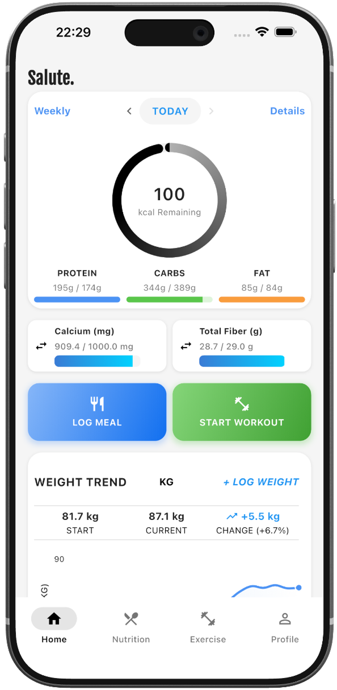
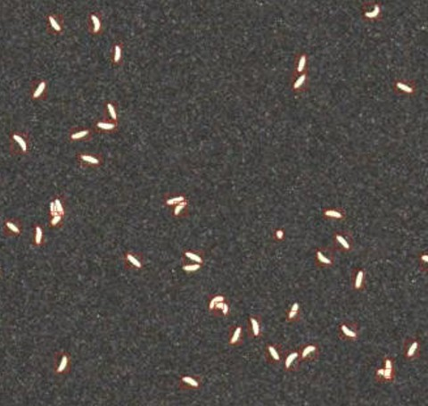

Computational Biologist & Data Scientist
PhD from the Weizmann Institute of Science and Registered Dietitian certified by Ichilov Hospital. Extensive expertise in computational biology, drug discovery, molecular biology, and physiology, with broad experience working across diverse experimental systems, from in vitro models to human studies, and spanning both basic and clinical research.
Publications
My work spans circadian biology, exercise physiology, metabolism, and cancer biology — combining wet-lab, multi-omics, and computational approaches to address fundamental biological questions.
Physiological and Molecular Dissection of Daily Variance in Exercise Capacity
Exercise performance is not constant throughout the day. We demonstrate that circadian clocks in skeletal muscle govern daily oscillations in exercise capacity by controlling NAD+/SIRT1 and AMPK signaling, glycogen availability, and substrate utilization. Using both mouse models and human cohorts we establish that time of day is a major determinant of physical performance, acting through core clock-dependent transcriptional and post-translational programs in muscle.
The liver-clock coordinates rhythmicity of peripheral tissues in response to feeding
Peripheral circadian clocks can be entrained by feeding independently of the light-dark cycle. We show that the liver-intrinsic circadian clock acts as a systemic timekeeper, coordinating rhythmic gene expression across multiple peripheral organs in response to feeding patterns. Disruption of the liver clock abolishes tissue-wide transcriptional rhythmicity in response to timed food intake.
Clock proteins and training modify exercise capacity in a daytime-dependent manner
Core circadian clock proteins (BMAL1, CLOCK) interact with exercise training to modulate physical performance in a time-of-day-dependent manner. Regular aerobic training reshapes the molecular clock in muscle, and the benefits of training — mitochondrial biogenesis, metabolite profiles, and endurance capacity — differ significantly depending on the time of day at which training occurs.
The human blood transcriptome exhibits time-of-day-dependent response to hypoxia: Lessons from the highest city in the world
We profiled the blood transcriptome of individuals in La Rinconada, Peru — the world's highest permanently inhabited city at 5,100 m — to study the human circadian response to chronic hypoxia. We show that the transcriptomic response to hypoxia is strongly gated by the circadian clock, with time of day being a dominant driver of gene expression even under extreme oxygen deprivation.
Steroid hormone receptors through Cry2 are key players in the circadian clock response to serum
The circadian clock is reset by systemic serum-borne signals, but the molecular mediators remain poorly understood. We identify steroid hormone receptors as key transducers of serum signals to the core clock, operating through Cryptochrome 2 (Cry2). This establishes a direct mechanistic link between endocrine hormonal fluctuations and the entrainment of the molecular oscillator.
Carbon dioxide regulates cholesterol levels through SREBP2
CO2 has long been regarded as a metabolic waste product. We demonstrate that CO2 acts as a bona fide signaling molecule that directly regulates cholesterol biosynthesis by modulating the activity and processing of SREBP2 — the master transcription factor controlling the mevalonate pathway. Elevated CO2 promotes SREBP2 activation and cholesterol accumulation across multiple model systems.
Inhibition of Tumor Microenvironment-Driven JAK-STAT Signaling Enhances Response to Arginine Deprivation Therapy in Triple-Negative Breast Cancer
Triple-negative breast cancer (TNBC) cells can acquire resistance to arginine deprivation therapy (ADT) through tumor microenvironment (TME)-driven JAK-STAT signaling, which metabolically compensates for arginine auxotrophy. We show that pharmacological inhibition of JAK-STAT pathway components disrupts this resistance mechanism and synergistically enhances the efficacy of ADT in TNBC models.
Monitoring daytime differences in moderate intensity exercise capacity using treadmill test and muscle dissection
This protocol provides step-by-step methodology for measuring time-of-day differences in exercise capacity in rodent models, encompassing graded treadmill exercise testing, maximal oxygen uptake assessment, and skeletal muscle dissection techniques optimized for downstream molecular and biochemical analyses.
Circadian control of mitochondrial dynamics and functions
Physiology and behavior in mammals is predominantly under circadian clock control. Circadian clocks are present in nearly every cell of the body and oscillate with a frequency of about 24 h in a self-sustained and cell autonomous manner. These clocks not only play a principal role in metabolic control but concurrently respond to a wide variety of metabolic cues. While various aspects of circadian regulation of metabolic functions have been extensively studied, our knowledge regarding circadian mitochondrial biology is just emerging. This review addresses circadian mitochondrial biology: from diurnal changes in mitochondrial make-up, through dynamics and functions, and discusses potential mechanisms that are implicated in circadian control of mitochondrial biology in mammals.
Compositions and Methods for Treating Cancer-Associated Cachexia
Cancer-associated cachexia is a debilitating wasting syndrome affecting the majority of advanced cancer patients and responsible for up to 30% of cancer-related deaths. This patent describes novel compositions and therapeutic methods — including bioelectronic and pharmacological approaches — for treating cachexia by modulating the metabolic and inflammatory cascades that drive muscle and fat wasting in cancer patients.
Applied Work
Translating research into products — applying scientific expertise to build tools that make a real difference.
Founder & Scientific Lead
Science-based AI wellness app delivering personalized fitness and nutrition guidance. Built on the same research principles behind my chronobiology and exercise physiology work. Salute combines adaptive workouts, precision nutrition tracking, and evidence-based biometric analytics — with 2000+ exercises, AI-driven macro feedback, and progressive training programs.
Visit Salute
Salute
Science-Based AI Fitness & Nutrition
for those who refuse to settle for average.
Computer Vision & Deep Learning
Automated computer vision and deep learning solution for detecting and counting neonate larvae. Developed for FreezeM to streamline insect farming quality control, high-throughput phenotyping, and biological assay analysis with precision image processing and robust object detection.
View on GitHub
Neonates Counter
Automated CV & Deep Learning Detection
for High-Throughput Insect Counting
Expertise
A multidisciplinary toolkit spanning wet-lab biology, computational analysis, and clinical practice.
Computational Biology
Data Science
Research Domains
Molecular Biology
Clinical
Tools & Platforms
Let's connect
I am actively looking for computational biology, data science, and bioinformatics roles. If you are building something at the intersection of biology and data — I would love to talk.